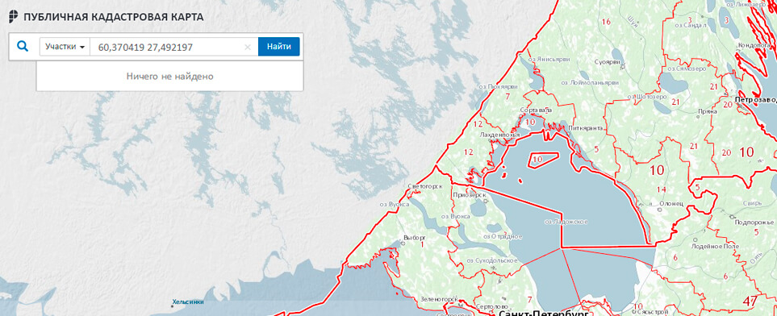

СКОРО 2018! Подумайте о будущем: готовы ли вы лишиться земли и стать нарушителем в один день?
Сложно разобраться с межеванием? Не отчаивайтесь! Мы знаем, как вам помочь! Оставьте свой номер! Звонок Бесплатный через 10 секунд!
Ищите конкретную услугу? начните вводить её название в строке поиска
смотреть все услугиДелайте бизнес вне земельных и межевых проблем!
-
Работаем без замечаний со стороны администрации, геонадзора, геодезической экспертизы, государственного кадастра недвижимости и других надзорных органов.
-
Экономим ваше время: выезд геодезистов в любой день, проведение всех работ без вашего участия, ускорение бюрократического процесса в Кадастровой Палате.
Делайте бизнес вне земельных и межевых проблем!
-
Работаем без замечаний со стороны администрации, геонадзора, геодезической экспертизы, государственного кадастра недвижимости и других надзорных органов.
-
Экономим ваше время: выезд геодезистов в любой день, проведение всех работ без вашего участия, ускорение бюрократического процесса в Кадастровой Палате.
Оставьте свой номер телефона, и наш лучший юрист проконсультирует вас БЕСПЛАТНО!
скидка 50%
Межевание + прирезка свыше 10%!
Цена снижена ВДВОЕ!
Теперь от 39 900 рублей
- Проведение межевых работ.
- Составление и согласование межевого плана.
- Проведение переговоров с соседями, государственными органами, председателями и членами правления.
- Внесение всех изменений в ГКН и ЕГРП.
скидка 45%
Уточнение границ участка + регистрация изменений! Получите скидку в 45%!
Теперь от 13 900 рублей
- Выезд геодезистов на местность.
- Проведение геодезической съёмки участка с возможностью прирезки.
- Согласование уточнённых границ с соседями и администрацией.
- Регистрация межевого плана в ГКН.
скидка 45%
Полное геодезическое сопровождение! Глобальное снижение цен!
Теперь от 14 000 рублей
- Создание геодезической разбивочной основы.
- Разбивка конструкций и элементов объектов строительства.
- Ведение исполнительной документации.
- Контроль исполнительной документации.
- Проверка субподрядных организаций.
- Проведение контрольно-исполнительной съёмки.
скидка 45%
Разовое геодезическое сопровождение! Максимальные скидки по СПб!
Теперь от 8 000 рублей
- Выезд геодезистов на объект.
- Разбивка объектов строительства.
- Подготовка схемы геодезической разбивочной основы.
скидка 50%
Уточнение границ + увеличение на 10%! Максимальные скидки по СПб!
Теперь от 13 900 рублей
- Согласование границ участка со смежниками.
- Выезд геодезистов на объект.
- Проведение контрольно-исполнительной съёмки.
- Выезд геодезистов на объект.
- Проведение кадастровой съёмки.
- Формирование схемы расположения земельного участка на кадастровом плане территории.
- Формирование межевого плана.
- Вынос точек в натуру.
- Внесение данных о новом участке в ЕГРН.
скидка 45%
Уточнение границ участка по фактическому землепользованию! Платите меньше – получайте больше!
Теперь от 15 900 рублей
- Установление выкупной стоимости.
- Подписание соглашения о перераспределении земель частной муниципальной собственности.
- Согласование границ участка со смежниками.
- Выезд геодезистов на объект.
- Проведение контрольно-исполнительной съёмки.
- Выезд геодезистов на объект.
- Проведение кадастровой съёмки.
- Формирование схемы расположения земельного участка на кадастровом плане территории.
- Формирование межевого плана.
- Внесение данных о новом участке в ЕГРН.
скидка 50%
Составление искового заявления! Повышаем скидки, а не цены!
Теперь от 2 900 рублей
- Изучение имеющейся документации на земельный участок.
- Проработка правовой позиции.
- Анализ имеющейся документации и судебной практики по аналогичным вопросам.
- Истребование недостающей документации.
- Составление и согласование текста искового заявления.
- Внесение всех необходимых изменений перед подачей в уполномоченные инстанции.
скидка 45%
Представление интересов в суде! Специальное предложение до конца недели!
Теперь от 15 000 рублей
- Ознакомление с материалами дела.
- Сбор и формирование доказательственной базы.
- Направление запросов на истребование недостающих данных.
- Составление и согласование всех процессуальных документов.
- Подача искового заявления и пакета документов в суд.
- Проработка линии правовой защиты и формирование стратегии.
- Выезд земельного юриста в судебные органы для представления интересов клиента.
все необходимые услуги в одном месте!
Сегодня найти хорошего геодезиста сложно. Но вам повезло! Наш лучший геодезист готов приехать к вам! Просто оставьте свой номер:
специальное предложение по услугам межевания
Геодезическая съемка
14 800 Р.Геодезическая съемка + схема расположения ЗУ на кадастровом плане
19 350 Р.Геодезическая съемка + схема расположения ЗУ на кадастровом плане + межевое дело
23 780 Р.Геодезическая съемка + схема расположения ЗУ на кадастровом плане + межевое дело + согласование границ
29 890 Р.Геодезическая съемка + схема расположения ЗУ на кадастровом плане + межевое дело + согласование границ + подача в кадастр
34 500 Р.Геодезическая съемка + схема расположения ЗУ на кадастровом плане + межевое дело + согласование границ + подача в кадастр + контроль в кадастре + получение кадастровой выписки
19 999 Р.Геодезическая съемка |
||||||
|---|---|---|---|---|---|---|
Схема расположения ЗУ на кадастровом плане |
||||||
Межевое дело |
||||||
Согласование границ |
||||||
Подача в кадастр |
||||||
Контроль в кадастре и получение кадастровой выписки |
||||||
14 800 Р. |
19 350 Р. |
23 780 Р. |
29 890 Р. |
34 500 Р. |
19 999 Р. |
Межевание НЕДОРОГО - больше не миф! Раздаём скидки! Оставьте номер телефона, а мы перезвоним через 10 секунд и снизим вам цену!
Электронные услуги в нашем юридическом центре
Выписка из ЕГРН (квартира, дом, земля и др.)
подробнееВ нашей компании можно заказать выписку из ЕГРН онлайн. Получить выписку можно в электронном или бумажном виде. ЕГРН несёт в себе основную информацию об объекте недвижимости – общая площадь, наличие запретов, арестов или обременений, а также информацию о собственнике.
Исправление кадастровой ошибки онлайн
подробнееИсправление кадастровой ошибки производится в течение 20 дней с момента подачи пакета документов и заявления об исправлении кадастровой ошибки в органы кадастрового учёта. Если ошибка – в техплане, кадастровый инженер обязан бесплатно провести повторные кадастровые работы. Если ошибка не содержится в техплане, а была изначально допущена в результате неверно внесения информации в паспорт, повторное межевание проводить не нужно.
поставить на кадастровый учет онлайн
подробнееЕсли вам необходимо поставить на кадастровый учет объект недвижимости, вы можете сделать это с помощью нашей организации в самые короткие сроки. Просто оставьте свой номер телефона, специалист свяжется с вами в течение 10 секунд и обговорит все нюансы. В результате вы получите готовый межевой план с полным пакетом документов для подачи в Кадастровую палату и дальнейшей постановки недвижимости на кадастровый учёт.
Выписка из ЕГРН о переходе прав
подробнееВы можете заказать выписку о переходе прав из ЕГРН онлайн через нашу организацию. Выписка из ЕГРН о переходе прав собственности содержит в себе основные сведения о правообладателях конкретного объекта недвижимости с 1998 года.
Внесение изменений в кадастр
подробнееВы можете заказать у нас онлайн услугу «внесение изменений в кадастр». Получаем новый кадастровый паспорт, с которым обращаемся в Росреестр для внесения изменений в сведения государственного кадастра недвижимости и в течение 10 дней получаем документ о регистрации.
Кадастровый паспорт онлайн
подробнее
С помощью нашей компании можно заказать кадастровый паспорт онлайн и получить его в сжатые сроки.
Кадастровый паспорт объекта недвижимости – выписка из кадастра недвижимости, которая содержит в себе сведения об объекте, необходимые для государственной регистрации права и оформления сделок с недвижимостью.
Справка о кадастровой стоимости
подробнееЗаказать справку о кадастровой стоимости объекта недвижимости можно онлайн в нашей компании. В большинстве случаев справка о кадастровой стоимости требуется для расчёта налога на недвижимость.
Кадастровая выписка
подробнееКадастровая выписка (выписка из кадастрового паспорта) – документ, в котором содержится справочная информация об объекте недвижимости: кадастровая стоимость, обременения, запреты, границы земельного участка и так далее.
Снятие с кадастрового учета
подробнееСнятие объекта с кадастрового учета осуществляется по судебному решению, по причине демонтажа или сноса сооружения. Для этого в уполномоченный орган необходимо подать вместе с основным пакетом документов и заявление о снятии с кадастрового учёта. В течение 18 дней выдаётся выписка об отсутствии объекта в государственном кадастре недвижимости.
Дополнительные услуги онлайн
Выкопировка из Технического паспорта
Архивная копия Технического паспорта
Технический паспорт на объект недвижимости
Выписка из ЕГРН о наличии/отсутствии недвижки
Электронные услуги в нашем юридическом центре
Просто введите кадастровый номер своего участка в поиске. Если появится надпись «Без координат границ», межевание участка не проводилось!
Наконец-то решились на межевание? Вы приняли верное решение! Оставьте свой номер телефона, перезвоним через 10 секунд БЕСПЛАТНО!
6 причин, которые изменят ваше представление о необходимости межевания!
-
Шанс увеличить свой участок до 10%!
Оформить прирезку и увеличить свой участок практически вдвое можно только в том случае, если границы участка установлены. В нашей компании действует уникальное предложение: межевание + прирезка 10%.
-
Наследование доли участка без споров!
Оформить прирезку и увеличить свой участок практически вдвое можно только в том случае, если границы участка установлены. В нашей компании действует уникальное предложение: межевание + прирезка 10%.
-
Ваш участок защищён от посягательств соседей и администрации!
Если границы вашего земельного участка не установлены, существует риск, что соседи захватят пару соток вашей земли или возведут на ней постройку без вашего согласия. Чтобы избежать этого нужно провести межевание.
-
Участок с установленными границами облегчает межевание соседних!
Скорее всего, вы думаете о том, что это проблемы соседей, но вы ошибаетесь. Прежде всего, это ваша проблема. Во-первых, земельные споры о границах разрешаются только в судебном порядке. Во-вторых, обращаем внимание на пункт выше!
-
Строительство без проблем
Законное строительство любой недвижимости требует предварительного проведения межевых и кадастровых работ, чтобы убедиться в том, что будущее строение не затронет смежных участков. Наличие документов о проведении межевания облегчит процесс регистрации объектов.
-
Межевание поможет уточнить ваши границы!
Когда площадь участка по документам не соответствует фактическим его размерам и конфигурации, требуется вмешательство геодезистов и кадастровых инженеров, для проведения межевания и уточния границ вашего участка вне зависимости от его размеров и сложности конфигурации.
как происходит процедура межевания земли?
Консультация земельного юриста
На личной встрече юрист ознакомится с ситуацией, документами на ваш земельный участок. Он также просчитает и выявит возможные подводные камни. Только после всего этого он устанавливает конечную цену за определённый объём услуг. Мы всегда идём навстречу клиенту и предлагаем наиболее подходящий для вас размер и способ оплаты в случае дальнейшего сотрудничества.
Подписание договора
На личной встрече юрист ознакомится с ситуацией, документами на ваш земельный участок. Он также просчитает и выявит возможные подводные камни. Только после всего этого он устанавливает конечную цену за определённый объём услуг. Мы всегда идём навстречу клиенту и предлагаем наиболее подходящий для вас размер и способ оплаты в случае дальнейшего сотрудничества.
Выезд профессиональных геодезистов
На личной встрече юрист ознакомится с ситуацией, документами на ваш земельный участок. Он также просчитает и выявит возможные подводные камни. Только после всего этого он устанавливает конечную цену за определённый объём услуг. Мы всегда идём навстречу клиенту и предлагаем наиболее подходящий для вас размер и способ оплаты в случае дальнейшего сотрудничества.
Проведение съёмки земельного участка
На личной встрече юрист ознакомится с ситуацией, документами на ваш земельный участок. Он также просчитает и выявит возможные подводные камни. Только после всего этого он устанавливает конечную цену за определённый объём услуг. Мы всегда идём навстречу клиенту и предлагаем наиболее подходящий для вас размер и способ оплаты в случае дальнейшего сотрудничества.
Выезд кадастрового инженера
На личной встрече юрист ознакомится с ситуацией, документами на ваш земельный участок. Он также просчитает и выявит возможные подводные камни. Только после всего этого он устанавливает конечную цену за определённый объём услуг. Мы всегда идём навстречу клиенту и предлагаем наиболее подходящий для вас размер и способ оплаты в случае дальнейшего сотрудничества.
Работа земельных юристов
На личной встрече юрист ознакомится с ситуацией, документами на ваш земельный участок. Он также просчитает и выявит возможные подводные камни. Только после всего этого он устанавливает конечную цену за определённый объём услуг. Мы всегда идём навстречу клиенту и предлагаем наиболее подходящий для вас размер и способ оплаты в случае дальнейшего сотрудничества.
Проверка и подача документов
На личной встрече юрист ознакомится с ситуацией, документами на ваш земельный участок. Он также просчитает и выявит возможные подводные камни. Только после всего этого он устанавливает конечную цену за определённый объём услуг. Мы всегда идём навстречу клиенту и предлагаем наиболее подходящий для вас размер и способ оплаты в случае дальнейшего сотрудничества.
Получение готовых документов
На личной встрече юрист ознакомится с ситуацией, документами на ваш земельный участок. Он также просчитает и выявит возможные подводные камни. Только после всего этого он устанавливает конечную цену за определённый объём услуг. Мы всегда идём навстречу клиенту и предлагаем наиболее подходящий для вас размер и способ оплаты в случае дальнейшего сотрудничества.
расчет стоимости услуг
Остались вопросы по ценам на межевание? Не гадайте! Просто оставьте свой номер телефона, поможем Вам через 10 секунд БЕСПЛАТНО!
География объектов «ВЫСШЕЙ ИНСТАНЦИИ»
Мы успешно проводим межевание с 2008 года по всей территории СПб и ЛО. Убедитесь в этом сами – просто посмотрите географию наших объектов прямо сейчас.